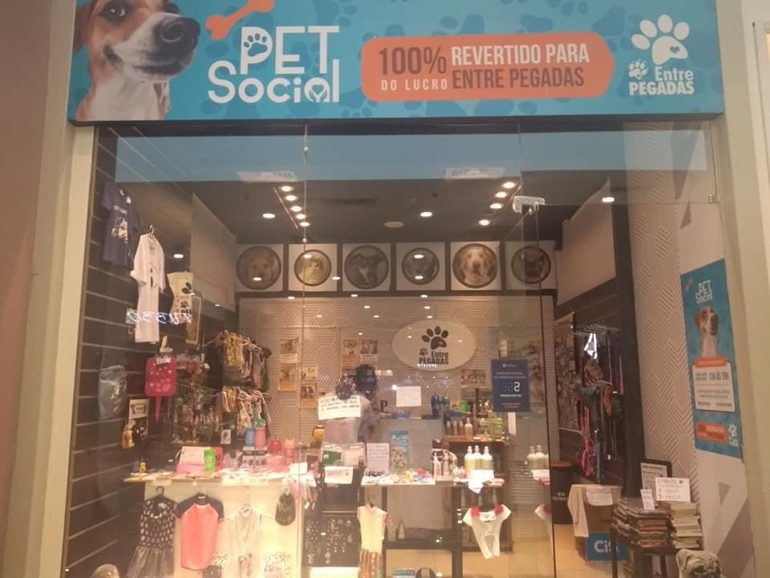
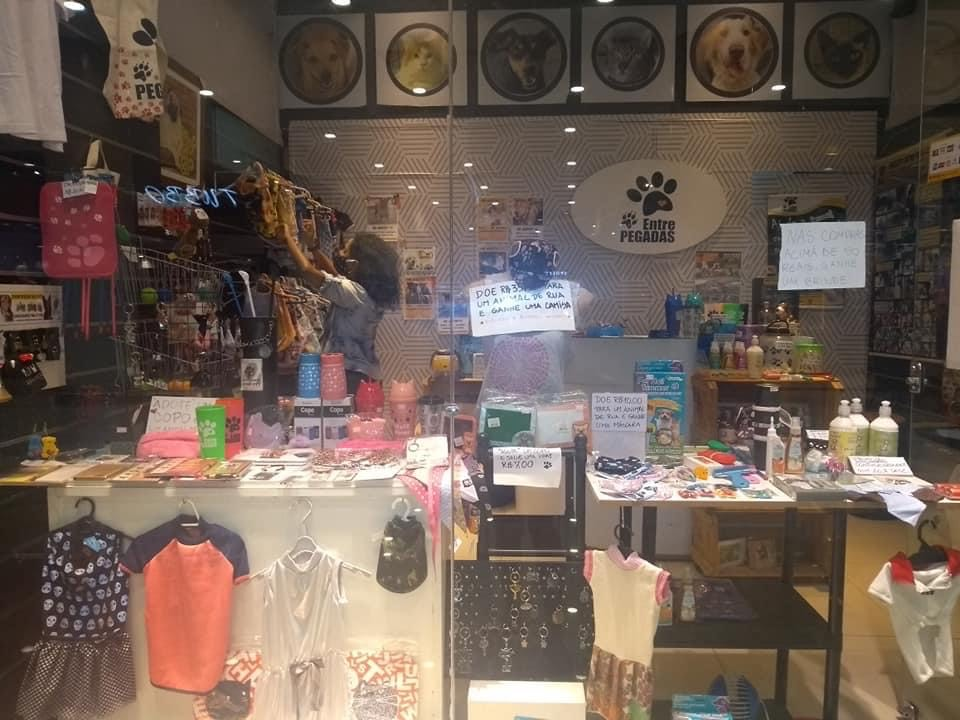
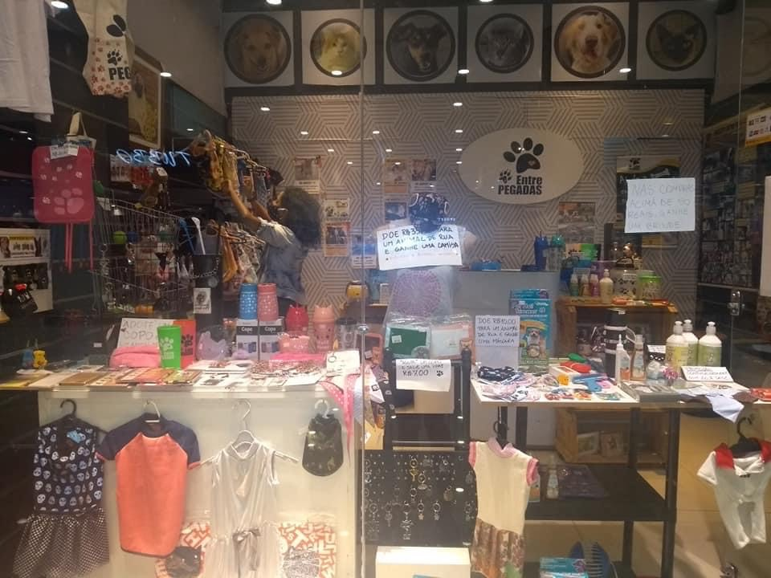

O projeto Entre Pegadas, em parceria com o Shopping Grande Rio e com o Carioca Shopping, possui dois espaços Pet Solidários. Nestes locais você pode adquirir lindos produtos para o seu pet e para você também e, com isso, contribuir para ajudar os nossos ceasinhas. Seguem os endereços e os horários de funcionamento:
ESPAÇO PET SOLIDÁRIO ENTRE PEGADAS - no Shopping Grande Rio às 2ªs,4ªs, 5ªs e aos sábados, no horário de 13h às 19h (ficamos próximos à Mr.Cat e ao Outback).
ESPAÇO PET SOLIDÁRIO ENTRE PEGADAS- no Carioca Shopping, de segunda-feira à domingo, das 14h às 20h (2º piso em frente às Casas Bahia e o Califórnia Coffee)No CEASA-RJ, localizado em Irajá-RJ, fazemos um trabalho dedicado a cães e gatos.
Como se trata de um trabalho voluntário os horários não são os mesmos das demais lojas dos shopping centers. Os ceasinhas são os cães e gatos que vivem no espaço dedicado aos seus cuidados, localizado no CEASA-RJ, no bairro de Irajá-RJ. Toda renda das pet solidárias são destinadas aos cuidados com alimentação, medicação, castração e atendimento veterinário destes animais.
Venha nos fazer uma visita em uma de nossas Pet Solidárias e conhecer o nosso trabalho.


